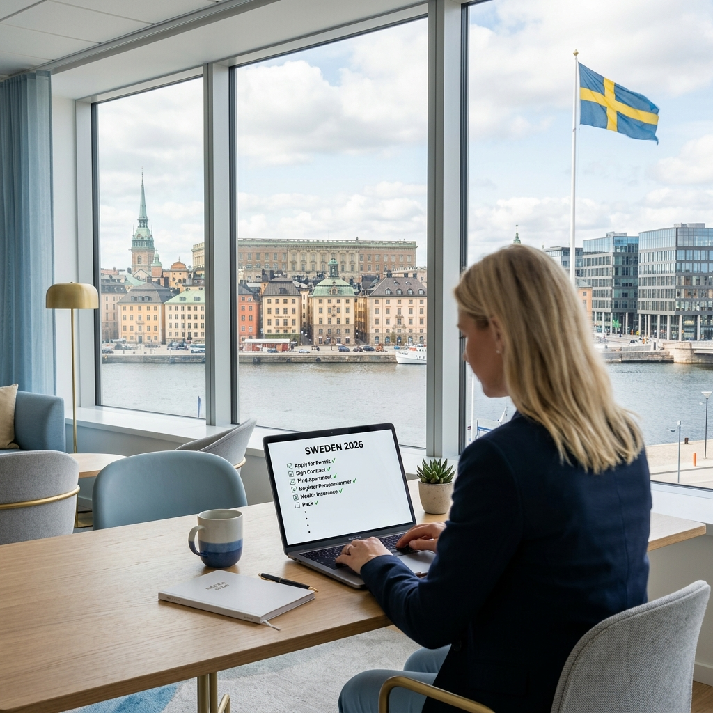

2026 Rehberi

Çalışma İzni & Hukuk
İsveç'te Çalışma İzni Almanın 10 Kritik Adımı (2026)
2026 yılı güncel maaş eşikleri, yeni göç yasası kuralları ve Migrationsverket başvurusu hakkında her şey. Türkçe avukat desteğiyle başvurunuzu garantiye alın.
Hemen İncele →